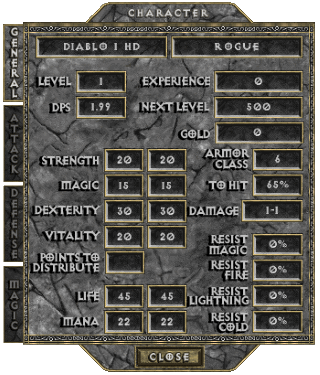
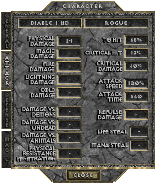
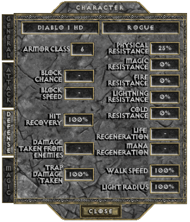
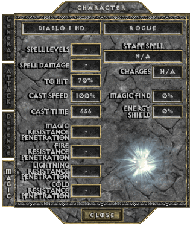
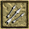
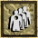
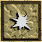

THE ROGUE
The Sisters of the Sightless Eye are a loosely organized guild shrouded in mystery amongst the peoples of the West. These highly skilled archers employ ancient Eastern philosophies that develop an "inner-sight" that they use both in combat and to circumvent dangerous traps that they may encounter. Known only as wandering Rogues in the West, the Sisters conceal their secret affiliation by posing as simple travelers. Many pompous fools have made the mistake of underestimating these steel nerved women in combat and paid a terrible price for their vanity.
These female warriors are competent with a sword and can hold their own using magic, but their true mastery comes with a bow in their hands. The Sisters employ a religious/military structure and is at least to some extent interested in gathering monetary riches, although this might be the goal of individual sisters rather than the Sisterhood itself.
The strange events transpiring in Khanduras have caught the attention of many of these Rogues. They have come from as far as the Eastern dunes to test their skills against the dark evil that is said to be lurking in Tristram. It is also believed that untold riches wait to be discovered among the ruins of the ancient cathedral. Although not as powerful in close combat as the Warrior, the Rogue is the undisputed master of the bow. A skilled Sister can send a stream of arrows at an opponent, each fired with a seemingly careless precision. The innate sixth sense that all Rogues seem to possess also allows them to sense trapped fixtures, and aids them in attempts to disarm these traps.

BASE STATS
Per character level: 5 Attribute Points +2 Life +2 Mana +3% To Hit (Spell)
+0.2 Physical Damage (only at levels 6 to 60, levels 1 to 5 make up 1-1 innate damage)
-0.2% Critical Hit Chance (only at levels 1 to 15, after 15 it stops decreasing)
-0.5% Critical Hit Damage (only at levels 1 to 20, after 20 it stops decreasing)
Physical Resistance drops from 25% to 10% at level 2, to 5% at level 3, to 2% at level 4, to 1% at level 5, to 0% at level 6
Per point in Strength: +0.35 Physical Damage +0.5% Critical Hit Damage (min 37 points)
Per point in Dexterity: +0.5% To Hit (Weapon) +0.125% Critical Hit Chance (min 57 points) +0.2 Armor Class
Per point in Vitality: +1 Life (hardpoints) +1.5 Life (softpoints)
Per point in Magic: +1 Mana (hardpoints) +1.5 Mana (softpoints) +0.5% To Hit (Spell)
   
PREFERRED WEAPONS
text
See THIS PAGE for more information about the Attack Speed of Bows.
SKILLS
| Name | Icon | Info |
|---|---|---|
| TRAP DISARM (available from start) | Effect: Utility skill that can disarm trapped doors or chests, after it factors in the Dungeon Level and your Dexterity Synergy: Dexterity: + Chance of success (with 90+ points it's always successful) | |
| MULTIPLE SHOT (from Character Level 8) |  | Effect: Split attack that shoots multiple arrows, thou each of them will deal reduced damage Number of Arrows: 2 Damage: -50% Cost: 6.5 Mana (+0.25 per Character Level from level 11, displays as rounded up to 1 decimal) Synergy: Dexterity: Number of Arrows: +1 (for each series of 30 points) |
| PIERCING SHOTS (from Character Level 16) |  | Effect: Offensive buff that gives arrows a chance to pierce through several enemies for 15 sec Pierce Chance: +35% (+???% per Character Levels from level ) Cost: 10% + 15 Mana Cooldown: 2 min (-5 sec per each increase in Pierce Chance) Synergy: Dexterity: Pierce Chance: +0.0(6) (min 25 points) |
| GUIDED ARROW (from Character Level 24) | Effect: Smart attack that enables the arrow to follow a target or find one, even out of direct visual sight To Hit (Weapon): +65% Damage: -1.(6)% (+3.(3)% per Character Level from level 26) Cost: 4 Mana (+0.1(6) per Character Level from level 24) | |
| SIGHTLESS EYE (from Character Level 32) |  | Effect: Powerfull attack that turns the arrow in a deadly star which opon hit explodes, doing adjacent damage Damage: +0% (+10% per Character Level from level 34) Adjacent Damage: -79% (+???% per Character Level from level 34) Cost: 9 Mana (+1 per Character Level from level 34) Synergy: Dexterity: Damage: +???% Adjacent Damage: +???% |